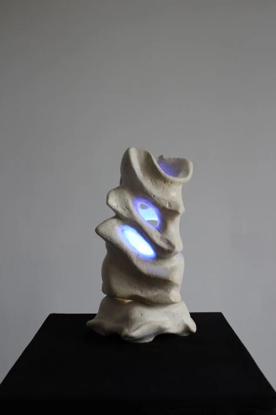
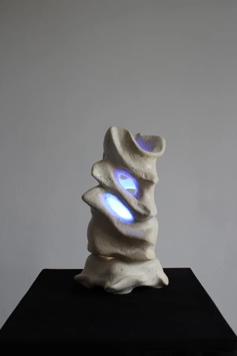
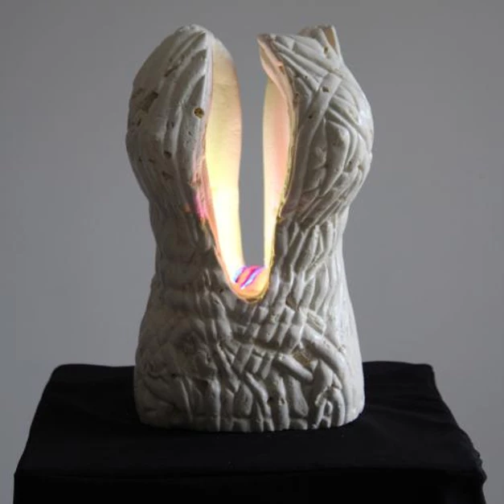
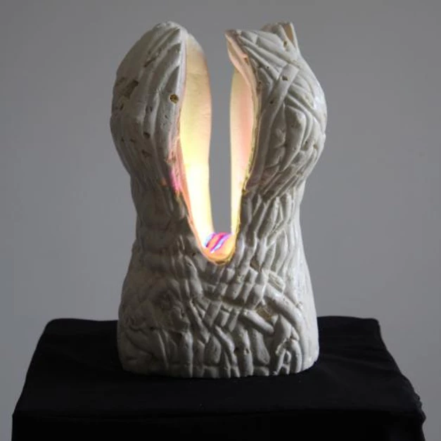

Océane
 

Océane est la représentation de l' océan avec ses vagues puissantes et ses courbes féminines. Les rayons du soleil aux reflets turquoises, et parfois d'un bleu très clair, transpercent la surface de cet univers d' un bleu profond apaisant.
Sculpture en pierre et en verre : 19cm x 18cm x 34,5cm
Fleur d'envie

La "Fleur d' envie" est composée d'un socle massif représentant un ancrage fort,de là se détachent les feuilles et la fleur, pour montrer à la fois sa légèreté et à la fois sa noble prestance.
Sculpture en pierre et en verre: 26cm x 25,5cm x 29,5cm
Epîtres
Les couleurs de la lumière révèlent la poésie des mots au travers des feuilles de papier imbriquées les unes sur les autres.
Sculpture en pierre et en verre: 21cm x 19cm x 41cm
Paix
Dans la forêt landaise, où je me suis installé, j'apprécie souvent la beauté du lever du jour derrière les pins.
Sculpture en pierre et en verre: 27cm x 28cm x 29cm
C'est le coeur le plus important
Cette sculpture représente 4 coeurs imparfaits entrelacés , 4 facettes d'un même coeur , imparfaites comme les facettes de l'être humain.
Cette carapace est sublimée lorsque la lumière jaillit en son centre, elle révèle alors la beauté de l'intérieur , la beauté du coeur dans son ensemble.
Sculpture en pierre et en verre: 23cm x 21,5cm x 27,5cm
Cocon
 

Cocon est la représentation d'un amour fusionnel. Un faisceau lumineux vertical transperce la sculpture en forme de cocon, il met en valeur la projection de la fusion énergétique de 2 êtres humains dormant en cuillère.
Sculpture en pierre et en verre: 40cm x 24cm x 30cm
Dénouement
Parfois une situation semble nouée, voire complètement bloquée.
En prenant du recul, nous pouvons percevoir d'autres issues que l'on n' aurait point imaginé.
Sculpture en pierre et en verre 21 x 21 x 39 cm
Envolée
L' inspiration de l'artiste déploie ses ailes, souvent dès que la nuit tombe.
Sculpture en pierre et en verre : 19cm x 17cm x 35,5cm
Feu de joie
La Joie réchauffe le cœur de celles, et de ceux qui la portent.
La joie se définit aussi par la projection de différentes couleurs sur l'environnement.
Sculpture en pierre et en verre : 30 cm x 30 cm x 34 cm
A la source
Une invitation à revenir à la source,
A son propre cœur,
Pour renaître,
Pour retrouver son centre,
Son cœur,
Pour rejaillir de la source.
Sculpture en pierre et en verre 25 cm / 25 cm/ 28 cm